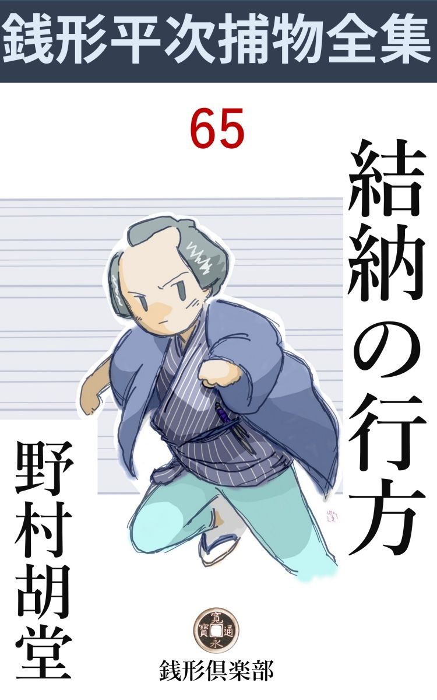
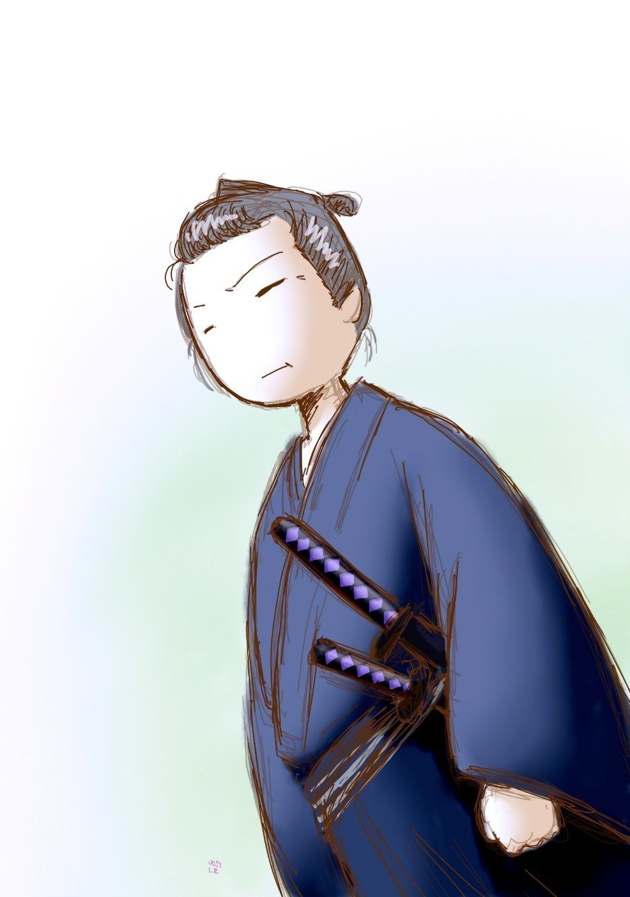

| 結納の行方: 銭形平次捕物全集第65話 (銭形倶楽部) | |
| 野村胡堂 | |
| ZENIGATA CLUB (2018) | |

一
「親分」
「何だ八、また大変の売物でもあるのかい、鼻の孔が膨 らんでいるようだが」
銭形の平次はいつでもこんな調子でした。寝そべったまま煙草盆を引寄せて、こればかりは分 不 相 応 に贅沢な水府煙草を一服、紫 の煙がゆらゆらと這って行く縁側のあたりに、八五郎の大きな鼻が膨らんでいると言った、天下泰平な夏の日の昼下りです。
「大変が種切 なんで、ちかごろは朝湯に昼湯に留湯だ。一日に三度ずつ入ると、少しフヤけるような心持だね、親分」
「呆れた野郎だ。十手なんか内懐 に突っ張らかして、わずかばかりの湯銭を誤 魔 化 しゃしめえな」
「飛んでもねえ、そんな不景気な事をするものですか、------不景気と言や、親分、ちかごろ銭形の親分が銭を投げねえという評判だが、親分の懐 具合もそんなに不景気なんですかい」
「馬鹿にしちゃいけねえ、金は小判というものをうんと持っているよ。それを投 るような強い相手が出て来ないだけのことさ」
「へッ、へッ」
「いやな笑いようをするじゃないか」
「その強そうな相手があったら、どうします、親分」
「またペテンにかけて俺を引出そうと言うのか、その強そうな相手と言うのは誰だ、------次第によっちゃ乗出さないものでもない」
平次は起直りました。春から大した御用もなく、巾着 切 や空巣狙を追い廻させられて、銭形の親分も少し腐っていた最中だったのです。
「品川の大黒屋常右衛門------親分も知っていなさるでしょう」
「石井常右衛門の親類かい」
「そんな気のきかない浅黄 裏 じゃない、品川では暖簾 の古い酒屋ですぜ」
「フーン」
「そこの娘------お関というのは、十八になったばかりだが、品川小町と言われる大したきりょうだ。手代の千代松と嫁 合 せ暖簾を分ける筈だったが、ちかごろ大黒屋は恐ろしい左前で、盆までに二三千両纏 らなきゃ主人の常右衛門首でも縊 らなきゃならねえ」
「------」
平次は黙ってガラッ八の長広舌に聴き入りました。この天 稟 の早耳は、また何か重大なものを嗅ぎつけて来た様子です。
「幸い、池の端茅 町の江島屋良助の伜良太郎が、フトした折にお関を見染めた」
「あの馬鹿息子がかい」
「息子は馬鹿でも、親爺は下谷一番の金持だ。上野の御用を勤めて、何万両と溜め込み、金の費い途に困って、庭石の代りに小判を敷いたり、子供の玩 具 にしたり」
「嘘を吐きゃがれ」
「それは嘘だが、とにかく、伜に日本一の嫁を貰うんだからと嫌がる大黒屋へ人橋架 けて口説き落し、その代り結納は千両箱が三つ、こいつは空 じゃないぜ、親分」
「大黒屋へやったというのか」
三千両の結納は、江戸の大町人のする事にしても、少し奢 りが過ぎます。
「池の端の江島屋から、馬に積んで番頭と仲人 夫婦が付添い品川大黒屋まで持って行って、江島屋の番頭太兵衛や、仲人の佐野屋佐吉夫妻が立ち会いの上、三つの千両箱を開けて見ると、こいつが皆な大粒の砂利 になっていたというから驚くじゃありませんか」
「何だと？ 八」
銭形平次もさすがに驚きました。江戸の街の真昼、三人も付添って行った三千両の小判が、馬の背で砂利に化ける筈はありません。
「だから行って見て下さいよ、------三千両は目腐れ金だが------」
「大きな事を言やがれ」
一両はざっと四匁、その頃の良質の小判は一枚でも今の相場にして一万円位につくわけで、三千両の値打、直訳 して三千万円、経済力は五千万円にも相当するでしょう。三貫とも纏まった銭を持ったことのないガラッ八が、こんなことを言うのは洒 落 にも我慢にもなりません。
「放っておけば大黒屋の亭主は本当に首でも縊 るかも知れませんよ。それに、品川小町のお関を見ただけでも、飛んだ眼の法楽だ------」
「止さないか、馬鹿野郎、------品川は縄張り違いだ」
「池の端は親分の支配 だ」
「支配------てえ奴があるかい、人聞きの悪い」
「とにかく行って見ましょう。人助けのためだ」
「それじゃ池の端の江島屋の方へ当って見るとしようか」
「有難てえ、それで頼まれ甲斐があったというものだ」
漸 く腰をあげた平次。ガラッ八はその後ろから、帆 っ立て尻になって煽 ります。
二
池の端の江島屋というのは、そのころ上野寛永寺の御用を勤めた、老舗 の仏具店で、袈 裟 法衣 、仏壇仏像から、大は釣鐘までも扱い、その上、役僧達の金 融 から、上野出入りの商人の取次まで引受けて、巨万の身上を作った下谷一番の大町人でした。
「銭形の親分、丁度いいところで------」
主人の良助は、平次の顔を見ると、そのまま奥へ通します。
「不思議なことがあったそうだね」
平次は好奇心以外何にも持ち合せない調子で応えました。
「不思議だか当り前だか知りませんが、とにかく、仲 人 の佐野屋さん御夫婦と番頭の太兵衛がついて、馬で送った三千両が品川の大黒屋に着いて、奥へ持って行って開くと、砂利になっていたそうで------狐に化 されたのなら木の葉になります。相手が人間だけに、貫々を勘定して、砂利を詰め替えたのは憎いじゃありませんか」
江島屋の口調では、大黒屋の細工と信じきっている様子です。
「付いて行った人達は駕籠かい、それとも徒歩 かい」
「佐野屋のお内儀さんだけは駕籠で、あとの二人は歩きましたよ。佐野屋さんの二人は馬の前に立って、太兵衛は馬の後から行ったそうですが------」
「途中で休むような事はなかったろうか」
「番頭を呼んで訊いて見ましょう」
良助が手を鳴らすと、平次の姿を見て次の間まで来ていた太兵衛は、四十男の心得た顔を出しました。
「ね、三千両を送って行く途中で、馬に水を呑ませるとか、人間が息を継ぐとか------ともかく何処かで休むような事はなかったのかい」
平次は続けました。
「飛んでもない親分さん、三千両に間違いがあっては大変と思い、三里あまりの道をわき眼もふらずに参りました。水も茶も呑むどころの沙 汰 じゃございません」
少し頑固 らしい太兵衛は以 ての外と頭を振ります。
「何か途中に変ったところがありゃしなかったかい、喧嘩とか、出入事とか、------お前さんに突き当って、馬から眼を外 らさせた奴とか」
「そんなものは、ございません、------御膝元とは言いながら、三千両の大金をこう無事に持って行けるんだから、本当に有難いことだと思いました、それが------」
太兵衛は口惜 しそうです。子飼いの番頭らしい一克 さで、何べん大黒屋へ呶 鳴 り込もうとしたことでしょう。
「馬はどこのだい」
「町内の十一屋に頼みました。駕籠や吊 台 じゃ面白くないから、古風に飾り馬にしようという話で------」
これ以上は何を訊ねても解りません。平次はガラッ八を促 し立てて、そこから一丁とも離れない、仲通りの飛脚 屋 に立寄りました。
「銭形の親分さん、------江島屋の三千両のお話でしょう、手前共もあの騒ぎにゃ、飛んだ迷惑をしていますよ」
十一屋の親方は、平次の顔を見るとこぼし始めました。
「馬はどこにいるんだい」
「お目にかけましょう、裏の厩 ですが」
案内してくれたのは、裏の大きな厩、五六頭の馬の中に交 って、一きわ美しい、鹿 毛 を親方は指します。
「こいつはいい馬だ、------こんなのはたんとあるまいね」
と平次。
「武家方の乗馬にはありますが、飛脚 馬 には勿体ない位の鹿毛ですよ。千両箱が三つというと精々十五六貫ですが、この暑い盛りに、三里の道を水も呑ませずに行くんだから、これ位のでなきゃあ安心がなりません。------ドウ、ドウ、二本松生れの五歳の牡 で、ドウ、ドウ」
親方は鹿毛の鼻面を撫 でながら、自慢半分に説明してくれます。
「曳 いて行ったのは？」
「そこにいる野郎で、------やい三次、ここへ来て挨拶をしな。銭形の親分さんが訊きてえことがあるとよ、------あれ、あんな野郎だ。頬 冠 りをしたまま顎をしゃくるのは、手前の辞 儀 かい」
「まあ、いいやな、------三次兄哥 とか言ったね。昨日の事を少し詳 しく話してくれまいか」
平次はそれとなく、この男の様子を観察しました。年恰好もよく解らないほど物さびておりますが、精々三十------どうかしたらもう少し若いかも知れません。葛 飾 在 の百姓の子だというが、それにしてもむくつけき姿です。
「江島屋の門口で旦那が指図をして多勢の見る前で馬につけた三つの千両箱を、品川の大黒屋の店先で、これも多勢の手でおろされ、奥へ進んで行っただけですよ」
「それから三次兄哥はどうした」
「一杯御馳走になって、御祝儀を頂いて、いい心持になって帰りましたよ」
何という無造作な事でしょう。こんな塩梅 では、平次の鼻でも、疑わしいものは嗅ぎ出せそうもありません。
取って返して、江島屋の家族や雇人を一と通り調べましたが、伜の良太郎が二十五にもなって、少し呂 律 が怪しいほどの足りない人間だということを発見しただけ。
「品川の大黒屋の方に何かあるだろう」
「すぐ行きますか、親分」
「向うへ着くと暗くなるが、一と晩の違いで三千両の始末をされるのも業 腹 だ。行って見ようか」
「へエ」
平次と八五郎はそこから品川まで、三里の道を急ぎます。
三
大黒屋の前は真黒に人立ち、ここには思いも寄らぬ大変な事が始まっておりました。
「えッ、黙らないか、武士に向って誘拐 とは何だ。------借金の抵 当 に、今晩は拙者が直々に伴れ帰り、内 祝言 を済ませて、宿の妻にするのに何の不思議だ。それが厭なら、用立てた金子百五十両、三年間の利に利が積んで、六百五十両になる、今ここで返して貰おうか」
威猛高 になるのは、三十五六の浪人、高利の金を貸して、品川一円の憎まれ者になっている、沢屋利助の用心棒、大川原五左衛門という御家人崩れです。
「旦那、それは御無理で、沢屋さんから金は借りましたが、旦那に娘を上げるとは申しません。それに重なる災難で、昨日も三千両の金が紛 失 し、思案に余っているところでございます」
店の板敷に額 を押しつけぬばかり、亭主の常右衛門の声は濡れておりました。五十七八のまだ働き盛りですが、苦労にやつれた痛々しさは、痩せた肩にも、そげた頬にも刻みつけられた姿です。
「------何？ 娘をやる約束はしなかった？ 馬鹿も休み休み言えッ、------返済相成兼候節は如何なる物を御取上げ候共異 存 無 之 と其 方 の判を捺した証文が入っているぞ。その娘は兼々拙者所望の品だ。六百五十両の代りに貰って行くのが、誘拐 同様とは何という言草だ」
「------」
「金は沢屋が貸したに相違ないが、その月のうちに証文はこの大川原五左衛門が買い取ってある、------さあ娘を渡して貰おうかい」
五左衛門の釘抜 のような腕はグイと伸びました。
「あれ------ッ」
見ると父親常右衛門の袖の下に隠れた娘のお関は、五左衛門の手に従って、ズルズルと引出されました。
十八娘の美しさが、恐怖 と激情に薫蒸 して、店中に匂うような艶めかしさ。鹿の子絞の帯も、緋 縮 緬 の襦 袢 も乱れて、中年男のセピア色の腕にムズと抱えられます。
「お願いでございます。大川原様、それではお嬢様が可哀想------」
飛び付くように若い手代、五左衛門の腕に犇 とすがります。二十三四の久松型で、主人の娘の危急に取りのぼせたのでしょう。
「何が可哀想、------娘は嬉し泣きに泣いているではないか」
パッと払った手に弾かれて、手代は物の見事に土間に尻餅を搗 きました。
「千代松、------長谷 倉 先生をお願いして来てくれ、早く、早く」
主人が声を掛けると、手代の千代松は土間から外へ、毬 のように転げながら飛出します。
「親分、入って見ましょうか」
見兼ねて、ガラッ八は平次の肘 を突きました。
「待ちな、もう少し見た方がいい、------まだ宵のうちだ。二本差がどんな威 張 ったって、嫌がる女を、引っ担いで行くわけにも行くまいじゃないか、落着いて見物するがいい」
平次は、野次馬の後ろから背伸びをしてこんな事を言うのです。
「でも、親分」
「気が揉めるのかい、------あの娘は綺麗過ぎるから、いろいろ紛 糾 が起るんだよ。あの顔を見たとたんに、俺は三千両の行 方 が解るような気がしたよ」
「江島屋へ嫁にやるのを邪魔する奴があるんでしょう」
「シッ------お立会の衆が顔を見るじゃないか、なんて野暮な声を出すんだ」
二人はそれっきり口を噤 みましたが、中の争いは、深刻に、執拗に続きます。
「来た来た、長谷倉先生が来たぜ、もう大丈夫だろう」
動揺 めく弥次馬。それを掻きわけて静かに入って来たのは、四十前後の立派な浪人者でした。

「御免よ、------娘を連れて行きたいが、仔細 はあるまいな」
「へエへエ、どうぞお召連れ下さいまし」
長谷倉甚六郎の心持を測 り兼ねながらも、亭主は相 槌 を打ちました。後ろからは手代の千代松が何やら目顔で合図をしております。
「お聞きの通り、その娘は拙者が親元になって、近々嫁入りさす筈になっている。無法な事を召さると容 赦 はいたさんぞ」
「何？ 何が無法」
大川原五左衛門はいきり立ちます。
「嫌がる娘を小脇に抱えて、無理に連れ出そうとするのは無法の沙汰ではないか」
長谷倉甚六郎の調子は、静かですけど屹 としておりました。
「黙れッ、借金の抵当 に取って行くのだ------その方は何者だッ、余計な口を出すと、ためにならんぞッ」
「拙者は長谷倉甚六郎、西国の浪人者だ。十年越しこの町内に住み、謡 いや碁の手ほどきから、棒振り剣術、物の本の素読などを少しばかり教えている」
「貧乏浪人の長谷倉とは御手前か、------なら、口を出さぬがいい。これは六百五十両という大金の出入事だ、------返済相成兼候節は如何なる物を御取上げ候とも異存無之------と首と釣替えの判を捺 した証文が入っているのだ」
大川原五左衛門は威猛高です。
「その物が、この娘だと言うのか」
「いかにも」
「黙れッ、------物は物、人間は人間だ。昔から人間を抵 当 に入れるのは御禁制と知らぬか」
「何？」
「如何なる物------とは読んで字の如く物だ。その辺の樽 でも瓶 でも古下駄でも持って行くがいい。人間を連れて行くのは誘拐 も同様ではないか、痴呆 奴 」
「たわけ と言ったな」
「それがたわけ でなくて何だ。まして、拙者親元になって、近々嫁入りさす娘だ。その方如き赤鬼にやってたまるものか」
「己れッ」
「や、手向いするか」
カッとなって斬り込む大川原五左衛門の刃 、長谷倉甚六郎身を捻 って片手拝みの手刀。
「あッ」
ポロリと落した五左衛門の刀を取上げると、足をあげてしたたかに腰のあたりを蹴飛ばしました。
「覚えておれッ、証文に物を言わせるぞ」
腰をさすりながら起き上がる大川原五左衛門。
「馬鹿奴ッ、証文の表はたった百五十両だ。三年で四倍半になる高利を、武士たる者が貸していいか悪いか、白洲 へ出て述べ立てて見るがいい」
「何を」
「それからこの腰の物は後日のために預り置く。商人の店先へ来て、抜身を振り廻した曲者、訴えて出れば御法通り所構 だ。それとも穏便に返して貰いたかったら、六百五十両持って来い。鐚 一文欠けても相成らぬぞ、ハッハッハッ、馬鹿な奴だ」
カラカラと笑う浪人長谷倉甚六郎、まことに水際立った男振りです。
「親分、驚いたね」
それを見て舌を巻いたのは、ガラッ八ばかりではありません。
「手の内も見事だが、知恵者だな、フーム」
平次もしばらくは唸 っております。
四
「銭形の親分さんで、------飛んだところをお目にかけました」
奥へ平次と八五郎を通して、主人の常右衛門は萎 れ返ります。
「いや、反 っていろいろの事が解ったような気がするよ。三千両の始末を、もう少し詳しく聞きたいが------一体どんな経 緯 なんだ」
「こう言ったわけでございます、親分」
主人の常右衛門は、心の苦悩を絞り出すように、こう語り始めました。
品川一番と言われた大黒屋が、家業の左前になったのはツイ五六年前から。型の通り米相場で大穴をあけ、地所も家作も手放して、あと五六百両の不足を、高利貸の沢屋利助に借り、利に利が嵩 んで、それがもう二千両になっているのでした。
その証文の一枚を買い受けたのは、沢屋の用心棒の大川原五左衛門、半歳も前から、執念深くお関を嫁にと迫りますが、相手が悪いので大黒屋も我慢がなり兼ね、ちょうど江島屋から賢 くない伜を承知で嫁に来てくれるなら、三千両の結 納 金 を出そうと言うのを渡りに船と、いやがる娘を説き伏せ、家のため、親のため、身を売ったつもりで嫁入りするのを承知させたのでした。
その結納金が三千両、江島屋からは確かに出したと言い、ここへ着いたのは箱に詰めた砂利で、纏まりかけた縁談も滅茶滅茶、その噂を聞くと大川原五左衛門は、さっそく貸金の抵 当 にお関をよこせと乗込んで来る始末だったのです。
「三つの千両箱はどこで誰が受取ったんだ」
平次は第一問を発しました。
「店で私が受取り、手代や小僧に奥------と申しましてもこの部屋より外にありません。------ここへ運ばせて、御 仲 人 の佐野屋さん御夫婦、それに江島屋の番頭の太兵衛さんに一杯差上げ------」
「その間、千両箱は」
「その床の間に置いて、四人の眼で見張っておりました」
「一寸も眼を離さなかったろうな------手水 に立つとか、何とか」
「そんな事はございません。すぐ千両箱を開けて中味を見るのも、ガツガツしているようでたしなみが悪いと思い、四半刻ばかり経って、汗も乾き、心持も落着いたところで、四人立会いの上開けて見ました」
常右衛門はゴクリと固唾 を呑みます。
「すると、中は砂利が一パイ詰まっていたというのだろう」
「左様でございます」
「店からここへ持って来るとき、小判にしては軽いと気が付かなかったのかな」
「何分、皆な夢中になっておりました。それに、千両箱などは、奉公人達も持ち慣 れておりません」
傾いた家運を自嘲するように、常右衛門の唇には、淡い淋しい笑いが浮びました。
「この縁談を壊 したいと思う者があるに相違ないが------」
と平次。
「それはもう、親の私から申しては変に聞えますが、町内だけでも、娘を欲しいという方は十人や二十人じゃございません」
お関の人気の凄まじさ。ガラッ八はうろうろ店口の方を見ております。その辺から、後光でも射すんではないかと思ったのでしょう。
「その中でも、一番がっかりするのは」
「手代の千代松でございます。------お関と一緒にして、暖簾 を分けてやる筈でしたが、こうなると、因 果 を含 めるより外に仕様もございません。分けてやる暖簾がこんなでは」
「それから」
「先刻の大川原五左衛門様も、ずいぶん腹を立てなすったようで、でも、六百五十両の金を返せば、これは文句がなかったでしょう」
「千代松は昨日どこにも出はしまいな」
「昨日も、一昨日も、萎 れてはおりましたが、どこへも出掛けません。------それに、あれは遠縁の子飼いで、そんな悪いことをする人間ではないと思います------が」
常右衛門の言葉が、満更見当違いでないことは、平次にもよく解ります。あの久松型の正直で弱そうな千代松が、三千両をどうしようという人間とは覚えません。
「先刻五左衛門を取って押えた、長谷倉甚六郎という浪人者は、ありゃどんな方だい」
「立派な方でございます。町内の若い衆にいろいろのものを手ほどきして、十年もこの隣りに住んでいらっしゃいますが、あんな知恵者で、あんな立派な方はございません。------娘のお関などは、どんなに可愛がって頂いたことか」
「すると、三千両はどこで誰が入れ替えたのだろう」
平次もここまで来ると、ハタと当惑 してしまいました。
「江島屋さんが、そんな事をなさる筈もございませんが、------それでも、ここでなく、途中でないとすると------」
常右衛門は江島屋の主人や番頭を疑っているのでしょう。
「とにかく、本当に江島屋から出したものなら、どこかに隠されているに違いない。何とか捜し出す工夫もあるだろうから、あんまり気を落さない方がいい」
平次はそう言って常右衛門を慰 めずにはいられませんでした。この主人は、本当に首でも縊 りそうだったのです。
「縁談は破れたも同様ですから、江島屋さんからは、明日にも三千両の結納を返せと言って来るに決っております。その時は」
濃い死の翳 が、この中老人の額を曇らせます。
「そんなに突き詰めちゃいけねえ、もう少し心持を大きく持つがいい」
平次もそう言うのが精々です。
それから千代松に逢いましたが、
「私は何にも存じません、------が、親分さん、旦那はあの通り、放っておけば、気が変になるか、死ぬか、どっちにしても無事で済みそうもありません。お願いですから、助けてやって下さい」
そういう一生懸命さが、平次を打つだけ、何の取止めたこともありません。
「お前はまさか、三千両の行方は知っちゃいないだろうな」
「え？」
平次の言葉は冷酷 でした。
「この縁談を壊すだけならいいが、三千両の行方が解らないとなると、幾人もの命に拘 わるぜ」
「親分さん、それじゃ、------私が、この私が隠したと言いなさるんですか」
千代松の唇はサッと白くなります。
「そうは言わないが------」
平次は煮え切らない返事をして背を見せました。
次に逢ったのはお関、これは恐怖と心配にさいなまれて、ただ、ひた泣くばかり、何を訊いても埒 があきません。
「私は何にも知りません、------でも、父 さんは気の毒です。どうか、助けて下さい、親分さん」
そう言うだけ。
「千代松が怪しいとは思わないか、お関さん、この男はこの縁談を一番打ち壊したがっている様子だが------」
「そんな事はございません、------千代松は気の弱い正直者です。そんな大それた事をする千代松じゃございません」
千代松のこととなると、お関は必死と涙の顔をふり上げます。
平次とガラッ八は、これっ切りで大黒屋を切り上げました。これ以上粘 ったところで、何の目星も付きそうにはなかったのです。
引揚げ際に、砂利を詰めた三つの千両箱を見せて貰いたいと言うと、千代松は裏の物置に案内してくれました。
「旦那は見たくもないと言って、ここに投り込みました。------この通り」
鍵 も何にもない物置の中に、砂利 を詰めた千両箱が三つ、ガラクタと一緒に投げ込まれてあったのです。
物置の外へ出ると、ポツポツ雨が降り出して来ました。隣の長谷倉甚六郎の浪宅からは、何やら素 読 を教える声。
「八、大急ぎで帰ろうぜ」
平次は何となく淋しい心持で往来に飛出しました。金に支配されて、泣く者、怒る者、命まで投げ出そうとする者、その種々相が、江戸っ子で貧乏で、三両も三千両も同じように考えている平次には腹立たしかったのです。
五
翌る日の朝、------
卯刻 半前に八五郎は叩き起されました。
「八、今日も歩くんだぜ」
「へエ------どこまで行くんで」
「まあ、黙って来るがいい」
平次は池の端の江島屋へ行って、番頭の太兵衛を誘 い出したのです。
「番頭さん、品川の大黒屋には、怪しいのは一人もねえ、------仲 人 の佐野屋夫婦は、馬の先に立って歩いているし、千両箱には手も掛けないから、これは疑いようはねえ」
「すると」
太兵衛は擽 ぐられるような不安に顔を上げました。
「一番損なのはお前だよ、番頭さん」
「へエ------」
「金は途中で抜かれたに違いないが、馬の後から歩いて来たお前が知らなきゃどうかしている。馬を曳いて行った三次とお前が馴れ合えば、小判を砂利に変えられない事もない」
「冗談でしょう、親分さん、私は------江島屋の子飼で、白鼠 といわれた私が、そんな馬鹿なことをするものですか」
太兵衛はいきり立ちます。中年者らしい頑固さが、相手の身分も、事情も忘れさせるのでしょう。
「それじゃ、池の端から品川へ行った道筋を一昨日の通り歩いて見てくれ。------どんな細かい事でも思い出して、話すんだ」
「行きましょう。こうなりゃ、唐 天 竺 までも参りましょう」
「そんなに遠くまで行くには及ばない」
平次はこんな調子で、とうとう尻の重い太兵衛をおびき出したのです。
池の端仲町の江島屋の門口に立った三人は、
「さあ行こう、俺は佐野屋の代りに一番先だ、八は馬だ、一番後は一昨日の通り番頭さん------」
一歩踏み出しました。加藤織之助様屋敷の角を御 数 寄 屋 町へ------。
「どんな事でも言わなきゃなりませんか」
「どんな事でも、石っころに躓 いたことでも、犬に吠えられた事でも」
平次はうなずいて見せます。
「この横町から出て来て、私に道を訊いた人がありましたよ」
いくらも歩かないうちに、------御数寄屋町と同朋町の間の、狭い横町を太兵衛は指します。
「どんな人間だ」
「浪人風の男で、------顔は忘れましたが、額 に古傷のあったことだけ覚えています。元黒門町の上総 屋へ用事があるが、どこをどう行けばいいか------と丁寧に訊くから、小戻りして教えて上げましたよ。上総屋はここから見えませんが、少し戻ると、それ、よく見えるでしょう」
太兵衛は小戻りして元黒門町の方を指さします。
「その間に馬は？」
「佐野屋さんの後ろから、門奈 伝十郎様の御屋敷前を、天神下へ曲りました」
「一寸の間見えなくなったわけだね」
「ほんの一寸、煙草一服喫 う間もありません。私は大急ぎで追っ駆けたんですから」
「江島屋のすぐ前でやったのは恐ろしい知恵だ」
平次は何を考えたか、その辺の路地を二つ三つ覗 いてもう先へ進もうともしません。
「ここで千両箱の中の小判を砂利 に詰め替えたというんですかい、親分」
太兵衛はムッとした様子です。
「------」
「そんな暇 はありゃしません。私は馬から十間とも遅れなかったんだ」
「------」
平次はしかしそれには応えようともしません。
「親分」
ガラッ八は平次の顔に動く表情から、事の重大さを読みました。
「十一屋へ行ってみよう、多分駄目だろうが」
と平次。
三人は飛脚 屋 の十一屋へ取って返しました。
「親方、三次は？ 昨夜から帰らないだろう」
飛込んだ平次。
「酔払って帰りましたが、今朝はまだ起きて来ませんよ。ゆうべ勝負 事で更 かしたようで」
「大急ぎで逢いたい。その寝ているところへ案内してくれ」
「へエ------」
十一屋の親分は不承不承に立上がりました。三人を案内して、厩 の後ろへ廻ると、そこは中二階になって、三次の万年床が筵 の蔭に敷いてあります。
「三次、もう辰刻 だぜ、起きろ、------銭形の親分が、手前に逢いてえとよ」
ヒョイと筵をかかげた親方。
「あッ」
一ぺんにのけぞりました。
「何だ何だ」
覗けば、馬方の三次、飼糧 切 りの中に首を突っ込んだまま、紅に染んで死んでいたのです。
「親分、こりゃ大変なことになりましたね」
「こんな事だろうと思ったよ」
忙しく死骸を起しましたが、頸 を半分切落されて、冷たくなった三次から、何にも手繰りようはありません。
「こんな腕節の強い野郎の首を、飼糧切りに押し込むなんて、人間業じゃありませんぜ」
舌を巻くのは親方です。
「酔っていたんだろう。着物は泥だらけだ------」
「そういえば、馬鹿に当ったとか言って、フラフラしながら帰って来たようだが------」
解ったのはそれだけ、そこいら中を捜して見ると、小判が一枚小粒が二つ三つ落散っていましたが、それが多分三次の命を奪った餌 の残りでしょう。
「行こう、八、今度は品川だ」
平次は切り上げて、白日の中へ飛出しました。
六
品川の大黒屋へ行って、ゆうべ家を開けた者はないか------と訊いて見ると、主人常右衛門始め、手代の千代松も、その他の奉公人も、宵から湿 っぽく引き籠って、一人も出た者はないとわかりました。
「お関さんにちょいと逢いたいが」
平次は最後の切札を出すより外に工夫はありません。
「親分さん、御用は？」
美しいが、おどおどするお関、その顔を平次はジッと見ました。
「お関、------人間が一人殺されたよ。------この縁談を打ち壊してくれ------と、誰に頼んだ」
「------」
「言ってくれ、------三千両の大金は、人一人を気違いにする。------早く言ってくれなきゃ、この上とも騒ぎが大きくなるぜ」
平次は、事件の火元 をお関と見たのです。これほどの美しい娘が、涙ながらに頼んだとしたら、どんな恐ろしい事が起るか、よく解るような気がしたのです。
「私は何にも存じません、親分さん」
お関の眼の清らかさ。
「それは本当か」
平次の当惑さは一と通りではありません。
「親分、千代松を当って見ましょう」
ガラッ八は口を出しました。
「いや、千代松にこれ程のことは出来ない」
平次は頸を捻 っております。
「それじゃ、これだけ聞かしてくれ、------一昨日 のあの時刻に、三千両の結納が馬で来るのを知っていたのは誰と誰だ」
「それなら申上げられます、父 さんと千代松と」
「それから」
「あとは奉公人達も知りません」
「若しや、お隣の浪人には話さなかったか」
「長谷倉 様には、御心配して頂いて、ツイ愚痴 を申しました」
「有難う、それ位でよかろう」
平次はお関に別れて外へ出ると、そっと店の小僧を物蔭に呼出しました。
「小僧さん、昨夜お隣の御浪人のところに素読の稽古があったかい」
「夜は休んだようですよ、頭 痛 がするとか言って」
「そうだろう、頭痛のするような晩だったよ」
平次はガラッ八を眼でさし招くと、
「八、いいか、今度は命がけだよ」
そっと囁きます。
「何をやらかすんで」
「俺と一緒に来るがいい」
真っ直ぐに入ったのは、言うまでもなくお隣の浪人者、長谷倉甚六郎の門口です。
「御免」
「ドーレ」
破れた障子を開けて、狭い土間へ顔を出したのは、主人長谷倉甚六郎自身でした。尤も天にも地にもたった一人暮し、取次も、主人も兼 帯 の貧乏浪人でもあったのです。
「長谷倉さん、少し殺生が過ぎましたネ」
平次はズバリと言って退けました。
「な、何を申す」
「三千両はお関さんが可哀想だから隠したのでしょう。それは解りますよ。江島屋の馬鹿息子へ、あの娘をやるくらいなら、あっし だって馬 子 を脅 かして、同じ鹿 毛 馬を仕立てさせ砂利を詰めた千両箱を背負わせて、天神下の角でアッという間に入れ換えるくらいの芸当はやりますよ」
平次は遠慮もなくまくし立てます。
「無礼者ッ、何を言うのだ」
「脅 かしっこなしに願いましょう。------額に古傷を描いて、番頭の太兵衛に道を訊き、ちょいと馬から遅らせたのは旦那の前 だが、大した働きだ」
「黙れッ、無礼者ッ」
「だが、三次を殺したのはやり過ぎですよ。旦那、人の命さえ取らなきゃア、この平次は眼をつぶってあげたのに」
「己 れッ」
何時の間に抜いたか、長谷倉甚六郎の手に閃 めく一刀、平次の肩先へ電光の如く浴びせるのを、引っ外して懐へ入った右手、それが颯 と挙がると、得意の投げ銭、七八枚の四文銭が、続けざまに飛んで、------二つ三つは除けましたが、幾つ目かは甚六郎の額を打ち、顎 を打ち、肘 を打ちます。
「御用ッ」
「神妙にせいッ」
平次の袖の下を掻いくぐって飛込む八五郎、その鼻の先へ白刃がスーッと靡 くと、上り框 の破れ障子はピシリと閉じられました。
「八、抜かるな」
「合点」
飛込む二人。が、一歩遅れました。長谷倉甚六郎は、入口の二畳に大 胡坐 をかくと、肌おしひろげて、一刀をわれとわが腹に突っ立てていたのでした。
七
「気の毒なことに、お関を助けるつもりでやった細工だ。最初は大した悪 気 がなかったろう」
「------」
平次は長谷倉甚六郎の死体を片手拝みに、湿 っぽくこう言うのでした。
「そのうちに、あんまり器用に三千両を隠したので、これほどの人も欲が出た。------お関の嫁入りを邪魔するつもりで隠した三千両だが、あんまり自分の知恵が逞 ましかったので、ツイ、三千両を隠しおおせる気になった。馬子の三次を眠らせさえすれば、誰知る者もあるまいと思ったのが間違い------」
「もう一人、代りの馬を曳いて天神下で待っていた相棒があった筈じゃありませんか」
「それは多分、かなりの金を貰って、その晩のうちに遠方へ逃げてしまったろう。三次は江戸の酒と女と賽 ころに引かされて踏み止まったばかりに飼糧 切 の中へ首を突っ込まれた」
平次の明察に曇りはありません。
が、三千両の金の隠し場所は、死んだ長谷倉甚六郎の口からでも聞かなければ、容易に解りそうもなかったのです。
甚六郎の浪宅は、ほんの二た間、嘗 めるように捜しましたが、三千両は愚 か、三両の貯 えもありません。
「こいつは驚いた。三千両はどこへ消えたんだ」
ガラッ八は根気よく見て廻りますが、日が暮れるまで見付かりません。
そのうちに検屍も済み、隣りの大黒屋の主人や、日頃娘のように可愛がって貰ったお関も来ました。死体の始末をして、鉦 と燭台を出す積りで小さい仏壇を開けると、中には金色燦 爛 たる豪華な仏具が一パイ。
「おや、これは、私の家の物置に預かってある品だが------」
常右衛門の顔は不思議でした。
「それはどういうわけで？」
「長谷倉さんは昔は大した御身分で、お国許では大きな仏壇を持っておられたが、浪々の身ではそんな仏壇を裏長屋に置くわけにも行かないと仰しゃって、大きな茶箱に仏具を一パイ詰め、お位牌、燭台一つ、香炉 一つ残したあとは、皆な私の家の物置に預けて置きましたよ」
「成程、その物置にある筈の仏具がこの家の仏壇へ一パイ詰っているのが不思議だというわけだね」
「へエ------」
話はそれっ切りでしたが、通夜 僧 が来て読経が済むと、
「御主人、一寸」
平次は常右衛門を呼出しました。
「へエ、------何か御用で」
けげんな顔をする常右衛門とガラッ八に提灯 の用意をさせて、つれ込んだのは、大黒屋の物置、砂利を詰めた千両箱が三つ、浅ましく投り出された中に三人は立ちました。
「自分の家でないとすると、大黒屋に隠すのが一番確かだ。長谷倉という浪人は知恵者だね」
「へエ------？」
平次の言葉は謎のようです。
「長谷倉甚六郎から預 ったという、仏具の箱は？」
「あれですよ、親分」
主人の指した茶箱、簡単に掛った縄を払って開けると、中には千両箱が三つ、蓋 を開くと、三千枚の小判が、燦 として灯の下に光ります。
「あッ」
常右衛門とガラッ八は、思わず声を呑みました。
「御主人、この金は江島屋へ返すがいい。三千両で売っちゃお関さんが可哀想だ、------千代松は婿にして不足はない男だ。------借金は働けば返せるだろう。無法な利息は、お上へ届出て、何とかして貰えるだろう」
平次は小判の光と、驚き呆れる常右衛門の顔を見 比 べながら、沁々 とこう言うのでした。
（編注）
作品中には、身体の障害や人権にかかわる、差別的な語句や表現が見られますが、本書が成立した当時の時代背景等が現代とは異なる古典的な文学作品でもあり、著者が故人でもありますので、底本のままとしました。ご理解、ご諒承のほどをお願い申し上げます。
著者---野村胡堂
挿絵---萩 柚月 © 2017
初出---「オール讀物」昭和十二年七月号 文藝春秋社
底本---「錢形平次捕物全集」第三巻 河出書房 昭和三十一年六月十五日初版
編集・発行 銭形倶楽部